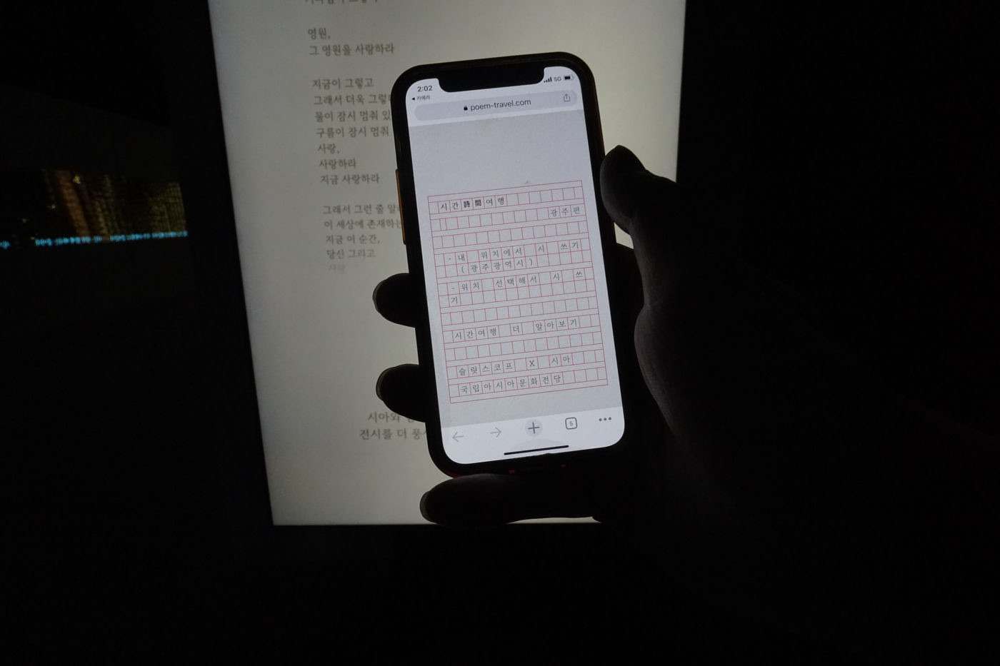
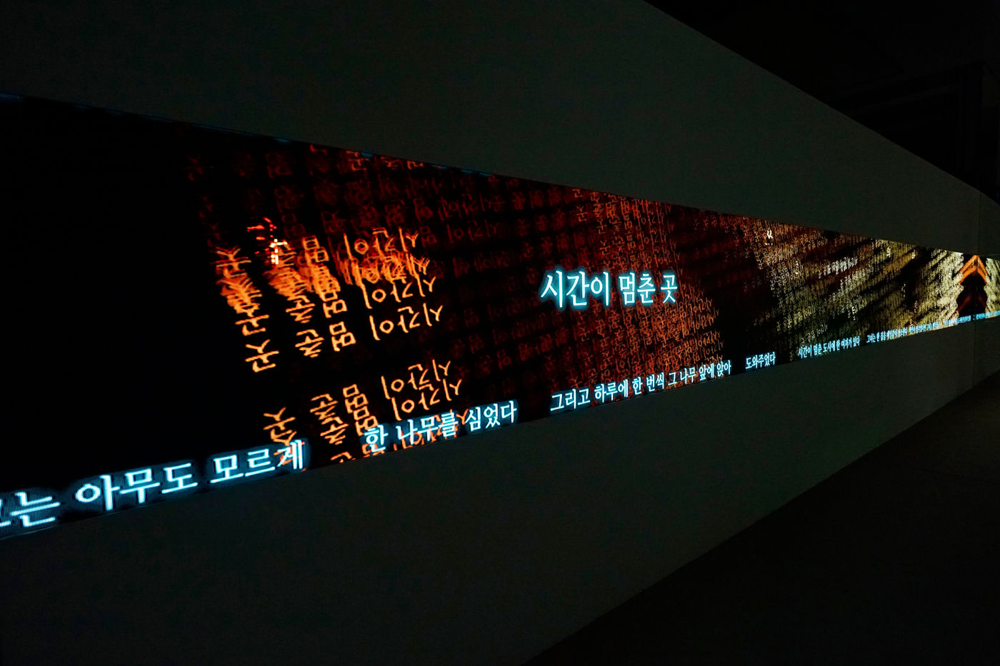
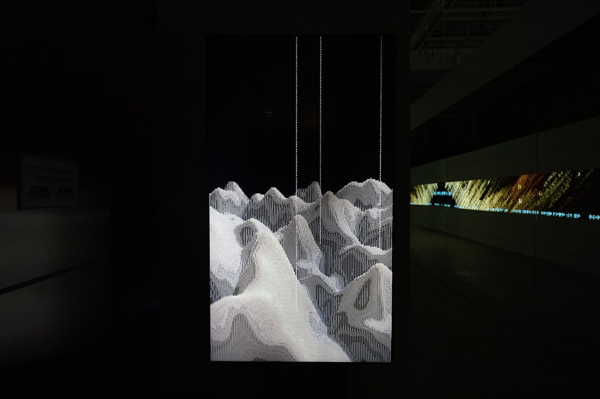
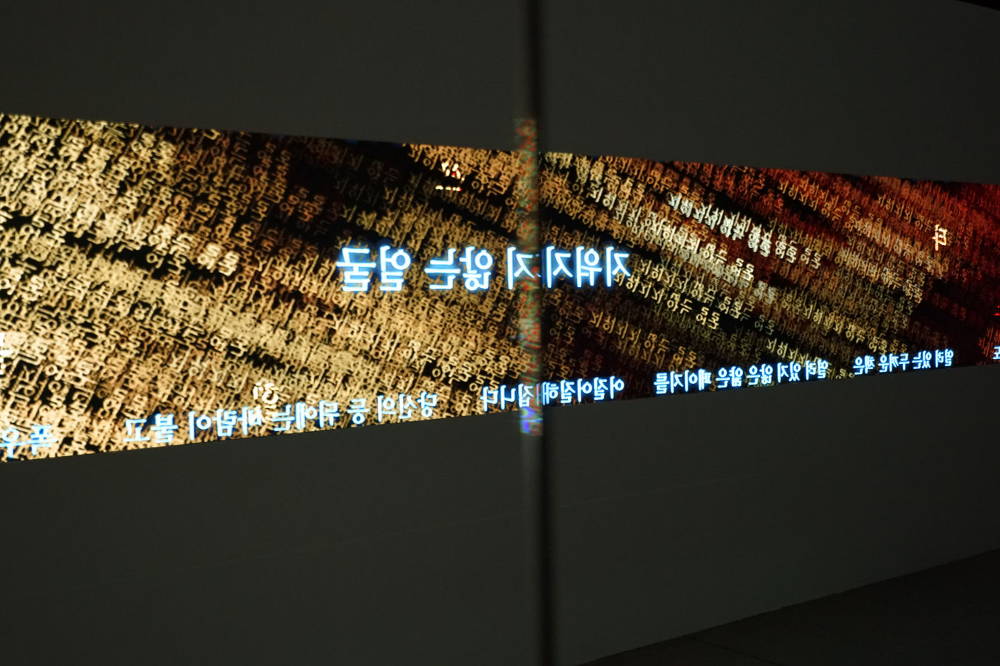

Group Exhibition — 2022
Storytelling for
Earthly Survival
관객의 위치와 모바일 상호작용으로 AI ‘SIA’와 함께 광주의 시를 짓고 시각화하는 참여형 프로젝트.
A participatory project that writes and visualizes poems of Gwangju with the AI ‘SIA’, driven by the audience’s location and mobile interaction.
Poem Travel은 광주광역시에서 관객의 위치 정보와 모바일 상호작용을 통해 만들어진 시와 데이터를, SLITSCOPE와 카카오브레인이 공동 개발한 인공지능 ‘SIA’로 시각화하는 프로젝트입니다. SIA는 한국어 AI 플랫폼 KoGPT를 통해 15,000편의 시를 학습하여 시를 생성하도록 만들어졌습니다.
관객은 Poem Travel의 모바일 웹페이지에 접속해, 도시의 가상 지도를 통해 광주 거리를 물리적으로 혹은 가상으로 탐색하면서 각 지역의 역사·지리·문화가 담긴 주제 목록에서 하나를 골라 SIA와 함께 시를 씁니다. 전시된 작업은 광주 시민과 인공지능 SIA가 함께 시를 쓰는 과정을, 참여자와의 상호작용 데이터와 그 과정에서 생성된 시를 활용해 시각화합니다.
광주 곳곳에서 이뤄지는 시 쓰기 행위는 실재하는 광주라는 도시와 데이터로 구성된 가상 세계라는 두 공간을 잇는 시적 네트워크를 만들어냅니다. 인공지능을 단순한 도구가 아니라 예술 창작의 중요한 창작자로 바라보는 SLITSCOPE는, 이 프로젝트를 통해 인간과 기계의 경계 안에서 창작 활동과 예술이 어떻게 변화할지를 질문합니다.
Poem Travel visualizes the poems and data created through the location and mobile interaction of audiences in Gwangju, using the AI ‘SIA’ — jointly developed by SLITSCOPE and Kakao Brain, and trained on 15,000 poems via the Korean-language platform KoGPT. Audiences explore Gwangju’s streets, physically or through a virtual map, and write a poem with SIA after choosing a theme drawn from each area’s history, geography, and culture. The poem-writing taking place across Gwangju creates a poetic network connecting the real city and a virtual world of data. SLITSCOPE, who sees AI not as a mere tool but as a creator of art, questions how creativity and art will change within the boundary of human and machine.
- 작품
- Work
- Poem Travel (AI, participatory project, data visualization)
- 협업
- Collaboration
- SLITSCOPE × Kakao Brain (SIA / KoGPT)
Asia Culture Center, Gwangju — 2022


